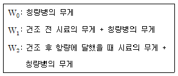
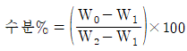
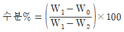
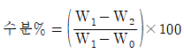
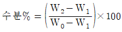

식품산업기사 (2014-05-25 기출문제)
1과목: 식품위생학
1. LC50에 관한 설명으로 틀린 것은?(오류 신고가 접수된 문제입니다. 반드시 정답과 해설을 확인하시기 바랍니다.)
- 기체 및 휘발성 물질은 ppm으로 표시한다.
- 분말 물질은 mg/L로 표시한다.
- 50%의 치사 농도로 반수치사 농도라고 한다.
- LC50(반수치사량)과 반비례 관계가 있다.
(정답률: 81%)

2. CI.perfringens에 의한 식중독에 관한 설명 중 옳은 것은?
- 우리나라에서는 발생이 보고된 바가 없다.
- 육류와 같은 고단백질 식품보다는 채소류가 자주 관련된다.
- 일반적으로 병독성이 강하여 적은 균수로도 식중독을 야기한다.
- 포자형성(sporulation)이 일어나는 경우에만 식중독이 발생한다.
(정답률: 72%)
3. 식품위생 검사 시 채취한 검체의 취급상 주의사항으로 틀린 것은?
- 저온 유지를 위해 얼음을 사용할 때 얼음이 검체에 직접 닿게 하여 저온유지 효과를 높인다.
- 검체명, 채취장소, 일시 등 시험에 필요한 참고사항을 기재한다.
- 운반 시 운반용 포장을 하여 파손 및 오염이 되지 않게 한다.
- 미생물학적 검사를 위한 검체를 소분 채취할 경우에는 무균적으로 행하여야 한다.
(정답률: 94%)
4. 식품의 방사능 오염에서 생성률이 크고 반감기도 길어 가장 문제가 되는 핵종만을 묶어 놓은 것은?
- 89Sr, 95Zn
- 140Ba, 141Ce
- 90Sr, 137Cs
- 59Fe, 131I
(정답률: 96%)
5. 식품과 주요 신선도(변질) 검사방법의 연결이 틀린 것은?
- 식육 – 휘발성 염기질소 측정
- 식용유 – 카르복실가 측정
- 우유 – 산도 측정
- 달걀 – 난황계수 측정
(정답률: 65%)
6. 금속제 기구 용기 중 식품오염 물질과 가장 거리가 먼 것은?
- 납
- 카드뮴
- 6가 크롬
- 포르말린
(정답률: 75%)
7. 우리나라 남해안의 항구와 어항 주변의 소라, 고둥 등에서 암컷에 수컷의 생식기가 생겨 불임이 되는 임포섹스(imposex)현상이 나타나게 된 원인물질은?
- 트리뷰틸주석(tributyltin)
- 폴리클로로피페닐(polychrolobiphenyl)
- 트리할로메탄(trihalomethane)
- 디메틸프탈레이트(demethyl phthalate)
(정답률: 90%)
8. 세균성 경구 감염병이 아닌 것은?
- 장티푸스
- 이질
- 콜레라
- 유행성 간염
(정답률: 60%)
9. 멜라민(melamine) 수지로 만든 식기에서 위생상 문제가 될 수 있는 주요 성분은?
- 페놀
- 게르마늄
- 포름알데히드
- 난량체
(정답률: 83%)
10. PH가 낮은 과일통조림에서 용출되어 중독을 일으킬 수 있는 물질은?
- 비소
- 수은
- 주석
- 카드뮴
(정답률: 79%)
11. 병원성 대장균의 특징이 아닌 것은?
- 일반의 장내 상존 대장균과는 항원적으로 구분된다.
- 영·유아가 성인에 비하여 고위험군이다.
- 오염식품을 섭취하고 10분 전후에 즉시 발병한다.
- 식중독은 두통, 복통, 설사, 발열 등이 주요 증상이다.
(정답률: 87%)
12. 식품의 변질을 일으키는 가장 중요한 요인은?
- 잔류농약
- 광선
- 미생물
- 중금속
(정답률: 89%)
13. 친환경농산물의 종류에 해당되지 않는 것은?
- 저농약농산물
- 유기농산물
- 전환기농산물
- 무농약농산물
(정답률: 72%)
14. 다음 중 살균·소독제로 사용하기에 부적합한 것은?
- 100% 알코올
- 3% 석탄산액
- 3% 크레졸 비눗물
- 0.1% 승홍액
(정답률: 78%)
15. 광우병(BSE)에 대한 설명으로 틀린 것은?
- 발병 원인체는 변형 프리온 단백질이다.
- 광우병 검사는 소를 죽인 후 소의 뇌조직을 이용하여 검사한다.
- 특정위험물질은 척수, 회장말단, 안구, 뇌 등이다.
- 국제수역사무국(OIE) 에서는 소해면상뇌증을 A등급 질병으로 분류하고 국내에서는 제1종 가축감염병으로 지정되어 있다.
(정답률: 71%)
16. 유해성분과 유래식품의 연결이 잘못된 것은?
- solanine - 감자
- tetrodotoxin - 복어
- venerupin - 섭조개
- amygdalin - 청매
(정답률: 83%)
17. 아플라톡신(aflatoxin)에 대한 설명으로 틀린 것은?
- 생산균은 penicillium속으로서 열대지방에 많고 온대지방에서는 발생건수가 적다.
- 생산최적온도는 25~30℃, 수분 16%이상 습도는 80~85% 정도이다.
- 주요 작용물질은 쌀, 보리, 땅콩 등이다.
- 예방의 확실한 방법은 수확 직후 건조를 잘하며 저장에 유의해야 한다.
(정답률: 87%)
18. 미생물의 성장을 위해 필요한 최소 수분활성도(Aw)가 높은 것부터 순서대로 배열한 것은?
- 세균 > 곰팡이 > 효모
- 세균 > 효모 > 곰팡이
- 효모 > 세균 > 곰팡이
- 곰팡이 > 세균 > 효모
(정답률: 75%)
19. 식품위생 검사와 관련이 가장 적은 것은?
- 관능 검사
- 독성 검사
- 화학적 검사
- 면역 검사
(정답률: 76%)
20. 식품의 위생 검사 시 생균수를 측정하는 데 주로 이용하는 배양기는?
- SS 배양기
- BGLB 배양기
- 표준한천평판 배지
- 젖당부이온 배지
(정답률: 88%)
2과목: 식품화학
21. 단백질의 구조 중 peptide 결합 사슬이 α-나선구조(helix)를 이룬 것은?
- 1차 구조
- 2차 구조
- 3차 구조
- 4차 구조
(정답률: 83%)
22. 전분의 노화에 영향을 미치는 인자가 아닌 것은?
- 전분의 종류
- amylose와 amylopectin의 함량
- 팽윤제의 사용
- 각종 유기 및 무기 이온의 존재
(정답률: 57%)
23. 다음 다당류의 최종 분해산물로 옳은 것은?
- starch → glucose
- glycogen → glucose + fructose
- cellulose → glucose + galactose
- inulin → galactose
(정답률: 67%)
24. 유지의 산패에 영향을 미치는 인자로 가장 거리가 먼 것은?
- 온도
- 산소 분압
- 지방산의 불포화도
- 유지의 분자량
(정답률: 59%)
25. 전분 분자의 비환원성 말단에서부터 차례로 포도당 2분자씩 분해하는 효소는?
- α-amylase
- β-amylase
- glycoamylase
- isoamylase
(정답률: 70%)
26. 물, 청량음료, 식용유 등 묽은 용액들은 어떤 유체의 특성을 나타내는가?
- 뉴턴(newton) 유체
- 딜러턴트(dilatant) 유체
- 의사가소성(pseudoplastic) 유체
- 빙함소성(bingham plastic) 유체
(정답률: 70%)
27. 식품의 기본 맛 4가지 중 해리된 수소이온(H+)과 해리되지 않은 산의 염에 기인하는 것은?
- 단맛
- 짠맛
- 신맛
- 쓴맛
(정답률: 71%)
28. 식품 중의 수분 함량을 가열건조법에 의해 측정할 때 계산식은?





(정답률: 66%)
29. 젤(gel)과 졸(sol)에 대한 설명 중 틀린 것은?
- 젤은 반고체로 도토리묵, 젤리와 같은 상태이다.
- 젤은 장시간 방치하면 이액현상이 일어난다.
- 한천은 가역적인 젤과 졸의 변화가 일어난다.
- 난백은 가역적인 젤과 졸의 변화가 일어난다.
(정답률: 65%)
30. 라이신(lysine)은 어떤 아미노산에 속하는가?
- 중성 아미노산
- 산성 아미노산
- 염기성 아미노산
- 함황 아미노산
(정답률: 74%)
31. 유중수적형(W/O) 교질상 식품은?
- 우유
- 마요네즈
- 아이스크림
- 버터
(정답률: 79%)
32. 단백질 중 질소 함유량은 평균 몇 % 정도인가?
- 5%
- 12%
- 16%
- 22%
(정답률: 87%)
33. 식품을 오래 보존하다 보면 고유의 냄새가 없어지게 된다. 그 주된 이유는 무엇인가?
- 식품의 냄새 성분은 휘발성이기 때문이다.
- 식품의 냄새 성분은 친수성이기 때문이다.
- 식품의 냄새 성분은 소수성이기 때문이다.
- 식품의 냄새 성분은 비휘발성이기 때문이다.
(정답률: 87%)
34. 맛에 대한 설명 중 틀린 것은?
- 짠맛은 알칼리 할로겐염에서 잘 나타난다.
- 떫은맛은 혀 점막 단백질의 수축에 의한 것으로 주된 성분은 폴리페놀 물질인 알칼로이드이다.
- 신맛은 수소이온 공여체에서 주로 나타난다.
- 매운맛은 구강 내 자율신경에 의해 느끼는 일종의 통각이다.
(정답률: 63%)
35. 유지를 가열하면 점도가 커지는 것은 다음 중 어느 반응에 의한 것인가?
- 산화 반응
- 가수분해 반응
- 중합 반응
- 열분해 반응
(정답률: 73%)
36. 다음 중 아미노산이 아닌 것은?
- 프로피온산(propionic acid)
- 알라닌(alanine)
- 글루타민산(glutamic acid)
- 메티오닌(methionine)
(정답률: 54%)
37. 다음 중 탄소수가 18개가 아닌 것은?
- 스테아르산(stearic acid)
- 올레산(oleic acid)
- 리놀렌산(linolenic acid)
- 팔미트산(palmitic acid)
(정답률: 52%)
38. 다음 금속 중 vitamin B12중에 들어 있는 것은?
- Zn
- Co
- Cu
- Mo
(정답률: 72%)
39. 6mg의 all-trans-retinol은 몇 international unit(IU)의 비타민 A에 해당하는가?
- 10,000IU
- 20,000IU
- 30,000IU
- 60,000IU
(정답률: 69%)
40. 식물성 검이 아닌 것은?
- 아라비아 검
- 콘드로이틴
- 로커스트 검
- 타마린드 검
(정답률: 71%)
3과목: 식품가공학
41. 감의 탈삽 원리를 가장 바르게 설명한 것은?
- 40℃의 온탕에서 떫은감을 담가두면 더운 물에 의하여 탄닌을 제거하기 때문에 떫은 맛이 없다.
- 탄닌성분이 없어지는 것이 아니라 산소 공급을 억제하면 분자 간 호흡에 의하여 불용성 탄닌으로 변화되기 때문에 떫은맛을 느끼지 못하게 된다.
- 통속에 천과 떫은감을 층층이 놓고 소주나 알코올 등을 뿌려두면 탄닌이 제거되므로 떫은맛을 느끼지 못한다.
- 밀폐된 곳에 떫은 감을 넣고 탄산가스를 주입시키면 탄닌을 완전히 제거할 수 있어서 떫은맛이 없다.
(정답률: 79%)
42. 샐러드 기름을 제조할 때 탈납(winterization) 과정의 주요 목적은?
- 불포화지방산을 제거한다.
- 저온에서 고체상태로 존재하는 지방을 제거한다.
- 지방 추출원료의 찌꺼기를 제거한다.
- 수분을 제거한다.
(정답률: 78%)
43. 다음 중 공업적으로 과실주스 중의 부유물 침전을 촉진시키기 위해 사용되는 것으로 가장 옳은 것은?
- 카세인(casein)
- 펙틴(pectin)
- 글루콘산(gluconic acid)
- 셀룰라아제(cellulase)
(정답률: 55%)
44. 달걀 선도의 간이 검사법이 아닌 것은?
- 외관법
- 진음법
- 투시법
- 건조법
(정답률: 82%)
45. 우유 5,000kg/h를 5℃에서 55℃까지 열교환기로 가열하고자 한다. 우유의 비열이 3.85kJ(kgK)일 때 필요한 열 에너지 양은?
- 267.4kW
- 275.2kW
- 282.3kW
- 323.5kW
(정답률: 45%)
46. 다음 중 설명이 옳은 것은?
- 패리노그래프(farinograph)는 밀가루와 물의 현탁액을 일정한 속도로 가열 또는 냉각시키면서 paste의 점도 변화를 기록하는 장치이다.
- 신장도(E)는 커브의 시작점부터 끝까지의 거리(mm)로 나타내고, 신장에 대한 저항도는 커브의 최고 높이(mm) 또는 50분 후의 커브의 높이(R)로 표시한다.
- 익스텐소그래프(extensograph)는 밀가루 반죽의 힘과 신장과의 관계를 기록하는 기기로서 패리노그래프 (farinograph)로부터 얻을 수 없는 밀가루 개량제의 효과를 측정할 수 있다.
- 신장도가 큰 경우에는 강한 반죽의 특성을 보이고 가스 수용력이 높다.
(정답률: 72%)
47. 다음 중 수산물 유래의 유독성분이 아닌 것은?
- tetrodotoxin
- holothurin
- zearalenone
- tyramine
(정답률: 55%)
48. 달걀 저장 중 일어나는 변화로 틀린 것은?
- 농후난백의 수양화
- 난황계수의 감소
- 난중량 감소
- 난백의 pH 하강
(정답률: 73%)
49. 잼의 완성점으로 온도계법을 사용할 때 가장 알맞은 온도는?
- 95℃
- 104℃
- 128℃
- 150℃
(정답률: 61%)
50. 연유 제조 시 유당과 단백질이 가열에 의하여 어떤 색소를 형성하는가?
- melanoidine 색소
- carotenoid 색소
- anthocyanin 색소
- myoglobin 색소
(정답률: 77%)
51. 된장 숙성 중 일반적으로 일어나는 화학변화와 관계가 먼 것은?
- 당화 작용
- 알코올 발효
- 단백질 분해
- 탈색 작용
(정답률: 64%)
52. 식육가공에서 훈연 침투속도에 영향을 미치지 않는 것은?
- 훈연 농도
- 훈연재의 색상
- 훈연실의 공기속도
- 훈연실의 상대습도
(정답률: 86%)
53. 마가린 제조 시 유지 원료의 융점으로 가장 적당한 것은?
- 5~10℃
- 15~20℃
- 25~30℃
- 35~40℃
(정답률: 47%)
54. 통조림 가열살균 후 냉각효과에 해당되지 않는 것은?
- 호열성 세균의 발육 방지
- 관 내면 부식 방지
- 식품의 과열 방지
- 생산능률의 상승
(정답률: 80%)
55. 식육의 근원섬유 단백질 중 주로 근육의 수축에 관여하는 단백질은?
- 트로포미오신(tropomyosin), 옥시미오글로빈(oxymyoglobin)
- 트로포닌(troponin), 메트미오글로빈(metmyoglobin)
- 액틴(actin), 미오신(myosin)
- 알파 액틴(α-actin), 베타 액틴(ß-actin)
(정답률: 78%)
56. 간장 덧 관리에서 교반을 해야 하는 직접적인 이유가 아닌 것은?
- 숙성 작용이 고르게 일어나게 한다.
- 간장의 색을 좋게 한다.
- 코지 중 효소 용출을 촉진시킨다.
- 이산화탄소를 배제하여 발효를 조장시킨다.
(정답률: 56%)
57. 포도당 당량(DE, Dextrose Equivalent)이 높을 때의 현상은?
- 점도가 떨어진다.
- 삼투압이 낮아진다.
- 평균 분자량이 증가한다.
- 덱스트린이 증가한다.
(정답률: 49%)
58. 햄, 소시지, 베이컨 등의 가공품을 제조할 때 단백질의 보수력 및 결착성을 증가시키기 위해 사용되는 주된 첨가물은?
- MSG
- ascorbic acid
- polyphosphate
- chlorine
(정답률: 62%)
59. 원료 크림의 지방량이 80kg이고 생산된 버터의 양이 100kg이라면 버터의 증용률(overrun)은?
- 5%
- 15%
- 25%
- 80%
(정답률: 59%)
60. 우유를 농축하고 설탕을 첨가하여 저장성을 높인 제품은?
- 시유
- 무당연유
- 가당연유
- 초콜릿우유
(정답률: 83%)
4과목: 식품미생물학
61. 정상형(homo type) 젖산 발효과정을 나타낸 것은?
- C6H12O6 → 2CH3CHOHCOOH
- C6H12O6 → CH3CHOHCOOH + C2H5OH + CO2
- 3C6H12O6 + H2O → 2C6H14O6 + CH3COOH + CH3CHOHCOOH + CO2
- 2C6H12O6 + H2O → 2CH3CHOHCOOH + CH3COOH + C2H5OH +2CO2 + 2H2
(정답률: 62%)
62. 알코올 발효력이 강한 효모는?
- Schizosaccharomyces속
- Pichia속
- Hansenula속
- Debaryomyces속
(정답률: 76%)
63. 우유에 발생되면 쓴맛을 냄으로써 고미화시키며, 단백질 분해력이 강한 균은?
- Erwinia carotova
- Gluconobacter oxydans
- Enterobacter aerogenes
- Pseudomomas fluorescens
(정답률: 63%)
64. 전분질을 원료로 하여 주정을 제조할 때 규모가 큰 생산에 적합하며 가장 효과적인 당화방법은?
- 맥아법
- 절충법
- 국법
- 아밀로법
(정답률: 39%)
65. 구연산 생산을 위한 미생물 발효 후 균체를 분리한 액에 무엇을 가해야 구연산을 분리할 수 있는가?
- Na2CO3
- CaCO3
- K2CO3
- MgSO4
(정답률: 54%)
66. 다음 중 조류(algae)에 대한 설명으로 틀린 것은?
- 보통 세포 내에 엽록체를 가지고 광합성 작용을 한다.
- 담수에도 존재할 수 있다.
- 광합성 색소의 종류, 광합성 산물 및 생식법 등에 의해 분류된다.
- 남조류에는 안토시아닌이 있어 광합성을 한다.
(정답률: 65%)
67. 다음 중 병행복발효주인 것은?
- 탁수
- 브랜디
- 위스키
- 럼주
(정답률: 67%)
68. 미생물과 생산하는 효소의 연결이 틀린 것은?
- Aspergillus niger - pectinsase
- Penicillium vitale - amylase
- Saccharomyces cerevisiae - invertase
- Bacillus subtilis - protease
(정답률: 65%)
69. 다음 중 발효에 의한 아미노산 생산 방법이 아닌 것은?
- 효소법
- 직접발효법
- 단백질 가수분해법
- 전구체 첨가법
(정답률: 40%)
70. 미생물에서 무기염류의 역할과 관계가 적은 것은?
- 세포의 구성분
- 세포벽의 주성분
- 물질대사의 보효소
- 세포 내의 삼투압 조절
(정답률: 62%)
71. 곰팡이가 가지고 있지 않은 세포 구조물은 무엇인가?
- 균사체
- 포자
- 자실체
- 섬모
(정답률: 61%)
72. 주정 제조 시 당화과정이 생략될 수 있는 원료는?
- 당밀
- 고구마
- 옥수수
- 보리
(정답률: 71%)
73. 독버섯의 독성분이 아닌 것은?
- enterotoxin
- neurine
- muscarine
- phaline
(정답률: 73%)
74. 산막효모의 특징을 잘못 설명한 것은?
- 알코올 발효력이 강하다.
- 산소 요구도가 높다.
- 대부분 양조 과정에서 유해균으로 작용한다.
- 다극출아로 증식하는 효모가 많다.
(정답률: 46%)
75. 동식물의 세포보다 미생물의 세포 내에 비교적 많이 함유되어 있는 것은?
- 요산(uric acid)
- 지방산(fatty acid)
- 아미노산(amino acid)
- 펩티도글리칸(peptidoglycan)
(정답률: 65%)
76. 원시핵세표 구조로서 세포 안에 핵과 액포가 없고 2분열에 의한 무성생식만을 하는 조류는?
- 녹조류
- 홍조류
- 남조류
- 갈조류
(정답률: 57%)
77. 다음 중 그람음성, 호기성 간균은?
- Clostridium속
- Micrococcus속
- Pseudomonas속
- Streptococcus속
(정답률: 45%)
78. 에탄올 1kg이 전부 초산 발효가 될 경우 생성되는 초산의 양은 약 얼마인가?
- 667g
- 767g
- 1,204g
- 1,304g
(정답률: 57%)
79. 적당한 수분이 있는 조건에서 식빵에 번식하여 적색을 형성하는 미생물은?
- Lactobacillus plantarum
- Staphylococcus aureus
- Pseudomomas fluorescens
- Serratia marcescens
(정답률: 55%)
80. 포도주 효모에 대한 설명으로 잘못된 것은?
- Saccharomyces cerevisiae var. ellipsoideus가 흔히 사용된다.
- 타원형이다.
- 무포자 효모이다.
- 아황산에 내성인 것이 좋다.
(정답률: 58%)
5과목: 식품제조공정
81. 식품성분을 분리할 때 사용하는 막분리법 중 관계가 옮은 것은?
- 농도차 - 삼투압
- 온도차 - 투석
- 압력차 - 투과
- 전위차 - 한외여과
(정답률: 83%)
82. 참치통조림에 쇳조각 같은 이물이 혼입되어 있을 때 이를 탐지할 수 있는 선별기는?
- 색채 선별기
- X선 선별기
- 형광등 선별기
- 근적외선 선별기
(정답률: 82%)
83. 식품의 막 이용기술 중 액체 및 기체에서 미립입가, 미생물의 제균, 생맥주·술 등의 제조에 주로 이용되는 막분리 기술은?
- 원심분리법(centrifugal filtration)
- 역삼투법(reverse osmosis)
- 전기투석법(electrodialysis)
- 정밀여과(membrane filtration)
(정답률: 64%)
84. 원료의 성숙도, 표면의 흠집 등을 선별하는 방법은 무엇인가?
- 모양 선별
- 광학 선별
- 크기 선별
- 무게 선별
(정답률: 62%)
85. 다음 중 식품을 가열하지 않고 건조시키므로 열변성에 의한 식품의 품질 저하가 문제가 되는 식품에 적합한 건조 방법은?
- 고주파 건조
- 초음파 건조
- 드럼 건조
- 팽화 건조
(정답률: 49%)
86. 체분리 시 입자 크기의 분포를 측정할 때 체눈의 크기는 표준체의 단위인 메시(mesh)로 표현하는데 메시의 정의로 옳은 것은?
- 체망 1inch 길이당 들어 있는 체눈의 수
- 체망 10inch 길이당 들어 있는 체눈의 수
- 체망 1cm 길이당 들어 있는 체눈의 수
- 체망 10cm 길이당 들어 있는 체눈의 수
(정답률: 73%)
87. 전자레인지에서 사용할 수 있는 마이크로파의 주파수로 옳은 것은?
- 1,350MHz
- 1,850MHz
- 2,450MHz
- 2,750MHz
(정답률: 59%)
88. 식품 건조 시 열전달 방식이 대류가 아닌 건조기는?
- 빈(bin) 건조기
- 트레이(tray) 건조기
- 유동층(fludized bed) 건조기
- 드럼(drum) 건조기
(정답률: 62%)
89. 압출가공 공정(extrusion cooking)의 압출온도를 상승시키는 조작 조건이 아닌 것은?
- 사출구(die aperture) 직경 감소
- 가수량 감소
- 스크루 회전 속도의 감소
- 스크루 피치의 감소
(정답률: 59%)
90. 다음 중 우유로부터 크림을 분리할 때 사용되는 분리기술은?
- 증발
- 탈수
- 원심분리
- 여과
(정답률: 89%)
91. 다음 중 곡류와 같은 고체를 분쇄하고자 할 때 사용하는 힘이 아닌 것은?
- 충격력(impact force)
- 유화력(emulsification)
- 압축력(compression force)
- 전단력(shear force)
(정답률: 87%)
92. 착즙된 오렌지 주스는 15%의 당분을 포함하고 있는데 농축공정을 거치면서 당 함량이 60%인 농축 오렌지 주스가 되어 저장된다. 당함량이 45%인 오렌지 주스 제품 100kg을 만들려면 착즙 오렌지 주스와 농축 오렌지 주스를 어떤 비율로 혼합해야 하겠는가?
- 1 : 2
- 1 : 2.8
- 1 : 3
- 1 : 4
(정답률: 72%)
93. 습식연미기 및 색채선별기로 쌀 표면의 유리된 쌀겨와 이물질, 썩은 쌀, 벌레먹은 쌀 등을 제거하여 즉시 이용할 수 있도록 만든 쌀은?
- 주조미
- 청결미
- 배아미
- 고아미
(정답률: 68%)
94. 제면공정 중 압출과정으로 제조되는 면이 아닌 것은?
- 소면
- 스파게티면
- 당면
- 마카로니
(정답률: 68%)
95. 상업적 살균에 대한 설명 중 옳은 것은?
- 통조림 관내에 부패세균만을 완전히 사멸시킨다.
- 통조림 관내에 포자형성 세균만을 완전히 사멸시킨다.
- 통조림 저장성에 영향을 미칠 수 있는 일부 세균의 사멸만을 고려한다.
- 통조림 관내에 포자형성 세균과 생활 세포를 모두 완전히 사멸시킨다.
(정답률: 80%)
96. 밀, 보리 등 곡류와 크기가 비슷하나 모양이 다른 여러 가지 잡초씨, 지푸라기 등을 분리할 때 길이나 직경의 차이에 따라 분리하는 방법은?
- 체 정선법
- 디스크 정선법
- 기류 정선법
- 자석식 정선법
(정답률: 38%)
97. 마쇄 전분유에서 전분을 분리하기 위해 수십장의 분리판을 가진 회전체로서 원심력을 이용하여 고형물을 분리하는 원심불리기로 옳은 것은?
- 노즐형 원심분리기
- 데칸트형 원심분리기
- 가스 원심분리기
- 원통형 원심분리기
(정답률: 40%)
98. 증발 농축이 진행될수록 용액에 나타나는 현상으로 틀린 것은?
- 농도가 상승한다.
- 비점이 낮아진다.
- 거품이 발생한다.
- 점도가 증가한다.
(정답률: 78%)
99. 무균포장법으로 우유나 주스를 충전·포장할 때 포장용기인 테트라 팩을 살균하는 데 적절하지 않은 방법은?
- 화염 살균
- 가열공기에 의한 살균
- 자외선 살균
- 가열증기에 의한 살균
(정답률: 79%)
100. 각 분쇄기의 설명으로 틀린 것은?
- 롤 분쇄기 : 두 개의 롤이 회전하면서 압축력을 식품에 작용하여 분쇄한다.
- 해머 밀 : 곡물, 건채소류 분쇄에 적합하다.
- 핀 밀 : 충격식 분쇄기이며 충격력은 핀이 붙은 디스크의 회전속도에 비례한다.
- 커팅 밀 : 충격과 전단력이 주로 작용하여 분쇄한다.
(정답률: 57%)